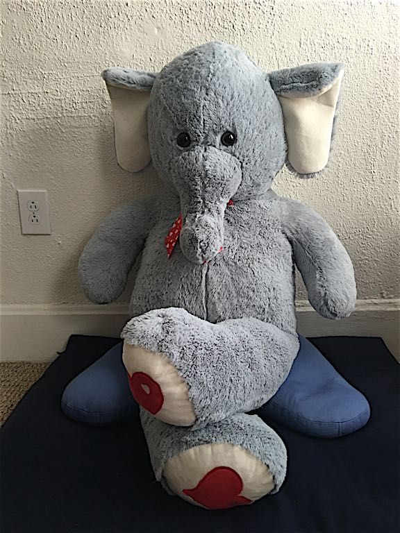
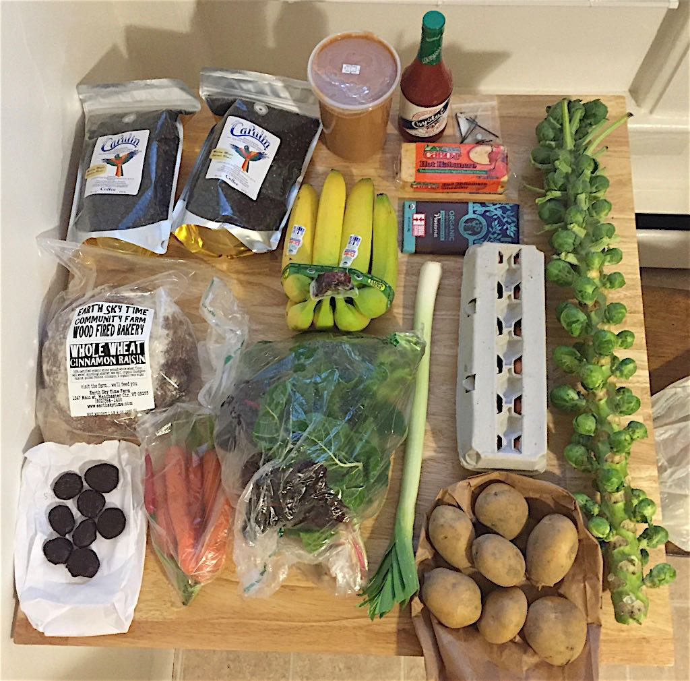
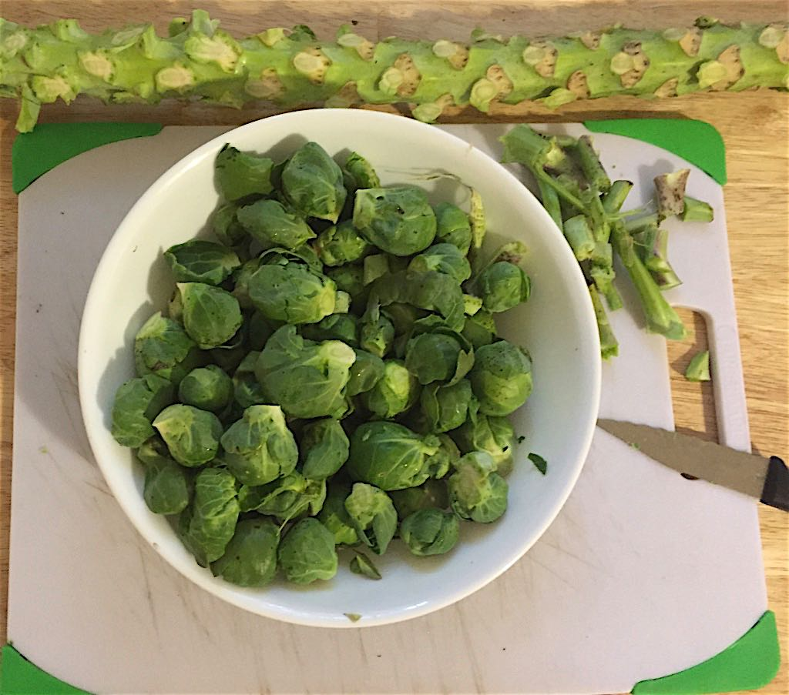

<!--?xml version="1.0" encoding="UTF-8" ?-->
<!DOCTYPE html PUBLIC "-//W3C//DTD XHTML 1.1//EN" "http://www.w3.org/TR/xhtml11/DTD/xhtml11.dtd">
<html xmlns="http://www.w3.org/1999/xhtml" xml:lang="en" lang="en">
<head>
  <meta http-equiv="content-type" content="text/html; charset=utf-8"/>
  <meta http-equiv="Content-Style-Type" content="text/css"/>
  <link rel="stylesheet" type="text/css" href="./css/layout.css"/>
  <link rel="alternate" type="application/rss+xml" title="RSS 2.0" href="./rss.xml"/>
  <title>Glory All Around | Reflections on Beauty and Wonder</title>
</head>
<body>
  <div class="page">
    <div class="header">
      <div class="title">
        <table>
          <tr>
            <td>
              <a href="."></a>
            </td><td>
              <h1>Glory All Around</h1>
	      <p class="meta">Reflections on Beauty and Wonder</p>
            </td>
          </tr>
        </table>
      </div>
      <form  method="get" action="https://encrypted.google.com/search">
        <legend>Search</legend>
        <p>
          <input accesskey="s" id="s" type="text" name="q" size="15" maxlength="255" value=""/>
          <input src="./css/magnifier.png" alt="Search" type="image"/>
          <input type="hidden" name="domains" value="billstclair.com"/>
          <input type="hidden" name="sitesearch" value="billstclair.com"/>
        </p>
      </form>
    </div>
		
    <!-- Body with example post data -->
    <div class="body">
      <div class="column two-thirds">
        
	<div class="post">
          <h2>
             <a href="./soon_youll_get_better.html">Soon You'll Get Better</a>
          </h2>
          <p class="date">
            Submitted by Bill St. Clair on Fri, 23 Aug 2019 21:14:23 GMT
            <span class="meta">
              
              &nbsp;<a href="./pabelbel_hallelujah.html" title="Previous post in category">&lt;==</a>
              <a href="./categories/glory.html" title="Makes my heart sing">Glory</a>
              <a href="./faq.html" title="Next post in category">==&gt;</a>&nbsp;
              
            </span>

          </p>
          <p>On Taylor Swift's new album, Lover, there is a song entitled, "Soon You'll Get Better". It features The Dixie Chicks.</p>

<p>In the song I heard, "... so, Jesus, now I pray to you..."</p>

<p>That line got me thinking about my prayer to Jesus today. I can find only one prayer, "Thy will be done."</p>

<p>Standing here, palms open to the sky, tears streaming, "Please, Jesus. I'm here. This body can move things. I can love people. Use me, as thou whilst."</p>

<p><iframe width="560" height="315" src="https://www.youtube-nocookie.com/embed/z64GAXlF_dg" frameborder="0" allow="accelerometer; autoplay; encrypted-media; gyroscope; picture-in-picture" allowfullscreen></iframe></p>
          <p class="meta">
            <a href="./admin/?add_comment=65">Add comment</a>&nbsp;&nbsp;
            <a href="./admin/?edit_post=65">Edit post</a>&nbsp;&nbsp;
            <a href="./admin/add_post">Add post</a>
          </p>
        </div>

	<div class="post alt">
          <h2>
             <a href="./pabelbel_hallelujah.html">Pabelbel Hallelujah</a>
          </h2>
          <p class="date">
            Submitted by Bill St. Clair on Fri, 31 Aug 2018 02:41:53 GMT
            <span class="meta">
              
              &nbsp;<a href="./jumping_rope_is_hard.html" title="Previous post in category">&lt;==</a>
              <a href="./categories/glory.html" title="Makes my heart sing">Glory</a>
              <a href="./soon_youll_get_better.html" title="Next post in category">==&gt;</a>&nbsp;
              
            </span>

          </p>
          <p>The Pachelbel Canon is the world's magic chord progression. I usually listen to it on repeat when I decide it's a good day for it. Here's my goto recording:</p>

<p><iframe width="560" height="315" src="https://www.youtube.com/embed/1wiRRv80ehM" frameborder="0" allow="autoplay; encrypted-media" allowfullscreen></iframe></p>

<p><br/>
<a href='https://inayatiorder.org/pir-vilayat-inayat-khan/'>Pir Vilayat Inayat Khan</a> used to end his spiritual seminars with a sing-along to the tune of the Pachelbel Canon with "Hallelujah" as the only lyrics. He'd start with four Hallelujahs per bar, and then lead us in singing along with two Hallelujahs per bar, finally adding a descant part. Here's my quick Garage Band recording of that (37 seconds):</p>

<p><iframe width="200" height="100" scrolling="no" frameborder="no" allow="autoplay" src="https://w.soundcloud.com/player/?url=https%3A//api.soundcloud.com/tracks/493110054&color=%23ff5500&auto_play=false&hide_related=false&show_comments=true&show_user=true&show_reposts=false&show_teaser=true&visual=true"></iframe></p>

<p>You can download the MP3 file as <a href='./images/pachelbel-hallelujah.mp3'>pachelbel-hallelujah.mp3</a>.</p>
          <p class="meta">
            <a href="./admin/?add_comment=64">Add comment</a>&nbsp;&nbsp;
            <a href="./admin/?edit_post=64">Edit post</a>&nbsp;&nbsp;
            <a href="./admin/add_post">Add post</a>
          </p>
        </div>

	<div class="post">
          <h2>
             <a href="./quote_4.html">Quote</a>
          </h2>
          <p class="date">
            Submitted by Bill St. Clair on Mon, 29 Jan 2018 22:32:15 GMT
            <span class="meta">
              
              &nbsp;<a href="./quote_3.html" title="Previous post in category">&lt;==</a>
              <a href="./categories/quote.html" title="Quotes to live by">Quote</a>
              <a href="./quote.html" title="Next post in category">==&gt;</a>&nbsp;
              
            </span>

          </p>
          <p>"I am a soul, currently living in a human body in a landmass called America, on a water planet circling an average star near the outside of a galaxy in a universe that is part of a manifest creation. I wonder about the reality where that creation is a single quark." -- Bill St. Clair</p>
          <p class="meta">
            <a href="./admin/?add_comment=63">Add comment</a>&nbsp;&nbsp;
            <a href="./admin/?edit_post=63">Edit post</a>&nbsp;&nbsp;
            <a href="./admin/add_post">Add post</a>
          </p>
        </div>

	<div class="post alt">
          <h2>
             <a href="./after_a_while.html">After a While</a>
          </h2>
          <p class="date">
            Submitted by Bill St. Clair on Wed, 03 Jan 2018 12:49:14 GMT
            <span class="meta">
              
              &nbsp;<a href="./the_suburbs.html" title="Previous post in category">&lt;==</a>
              <a href="./categories/poetry.html" title="Poetry is the language of the heart">Poetry</a>
              <a href="./the_serenity_prayer.html" title="Next post in category">==&gt;</a>&nbsp;
              
            </span>

          </p>
          <p>by Veronica A. Shoffstall</p>

<p>After a while, you learn the subtle difference<br/>
Between holding a hand and chaining a soul,<br/>
And you learn that love doesn't mean leaning<br/>
And company doesn't mean security,<br/>
And you begin to learn that kisses aren't contracts<br/>
And presents aren't promises,<br/>
And  you begin to accept your defeats<br/>
With your head up and your eyes open,<br/>
With the grace of a woman, not the grief of a child,<br/>
And learn to build all your roads on today<br/>
Because tomorrow's ground is too uncertain for plans,<br/>
And futures have a way of falling down in mid-flight.<br/>
And after a while you learn<br/>
That even sunshine burns if you get too much.<br/>
So you plant your own garden and decorate your own soul,<br/>
Instead of waiting for someone to bring you flowers.<br/>
And you learn that you can endure. . .<br/>
That you really are strong<br/>
And you really do have worth<br/>
And you learn and learn. . .<br/>
With every goodbye, you learn.</p>
          <p class="meta">
            <a href="./admin/?add_comment=62">Add comment</a>&nbsp;&nbsp;
            <a href="./admin/?edit_post=62">Edit post</a>&nbsp;&nbsp;
            <a href="./admin/add_post">Add post</a>
          </p>
        </div>

	<div class="post">
          <h2>
             <a href="./jumping_rope_is_hard.html">Jumping Rope Is Hard!</a>
          </h2>
          <p class="date">
            Submitted by Bill St. Clair on Sun, 16 Oct 2016 15:01:06 GMT
            <span class="meta">
              
              &nbsp;<a href="./freedom.html" title="Previous post in category">&lt;==</a>
              <a href="./categories/glory.html" title="Makes my heart sing">Glory</a>
              <a href="./pabelbel_hallelujah.html" title="Next post in category">==&gt;</a>&nbsp;
              
            </span>

          </p>
          <p>At the farmer's market yesterday morning, there was a lady from the local hospital offering to give away a cheap jumprope and water bottle to anybody who would jump for one minute. I did it, but boy was I out of breath afterwards. I did it using the skipping method, not hopping up and down with both feet.</p>

<p>I thought I was in pretty good shape, from walking and bicycle riding every day, but one minute jumping rope showed me that I was fooling myself.</p>

<p>The rope is now hanging on my bedroom door, where I will hopefully see it and jump every day, the hard way. I did 15 jumps this morning. In a couple of weeks, that should be a hundred, and I'll be in much better aerobic shape for it.</p>

<p></p>
          <p class="meta">
            <a href="./admin/?add_comment=61">Add comment</a>&nbsp;&nbsp;
            <a href="./admin/?edit_post=61">Edit post</a>&nbsp;&nbsp;
            <a href="./admin/add_post">Add post</a>
          </p>
        </div>

	<div class="post alt">
          <h2>
             <a href="./freedom.html">Freedom!</a>
          </h2>
          <p class="date">
            Submitted by Bill St. Clair on Sat, 15 Oct 2016 16:14:47 GMT
            <span class="meta">
              
              &nbsp;<a href="./garth_the_elephant.html" title="Previous post in category">&lt;==</a>
              <a href="./categories/glory.html" title="Makes my heart sing">Glory</a>
              <a href="./jumping_rope_is_hard.html" title="Next post in category">==&gt;</a>&nbsp;
              
            </span>

          </p>
          <p>I've revived my political blog, <a href='https://etwof.com'>End the War on Freedom</a>, after a year and a half in mothballs. It's now at <a href='https://etwof.com'>EtWoF.com</a>. Check out my <a href='https://etwof.com/im_back.html'>reintroduction post</a>, and don't miss the <a href='https://etwof.com/aggregator/'>news aggregator</a>.</p>
          <p class="meta">
            <a href="./admin/?add_comment=60">Add comment</a>&nbsp;&nbsp;
            <a href="./admin/?edit_post=60">Edit post</a>&nbsp;&nbsp;
            <a href="./admin/add_post">Add post</a>
          </p>
        </div>

	<div class="post">
          <h2>
             <a href="./garth_the_elephant.html">Garth the Elephant</a>
          </h2>
          <p class="date">
            Submitted by Bill St. Clair on Thu, 21 Jan 2016 18:52:00 GMT
            <span class="meta">
              
              &nbsp;<a href="./new_iphone_6s_security.html" title="Previous post in category">&lt;==</a>
              <a href="./categories/glory.html" title="Makes my heart sing">Glory</a>
              <a href="./freedom.html" title="Next post in category">==&gt;</a>&nbsp;
              
            </span>

          </p>
          <p>I went shopping last Sunday at the local Stop & Shop, the place I usually go for stuff I can't get at the local health food store. They had a large bin full of big-as-a-kid stuffed animals. An elephant followed me home. My brother-in-law named him Garth. He makes me smile every time I look at him. Welcome to my home, Garth.</p>

<p style='text-align: center;'></p>
          <p class="meta">
            <a href="./admin/?add_comment=59">Add comment</a>&nbsp;&nbsp;
            <a href="./admin/?edit_post=59">Edit post</a>&nbsp;&nbsp;
            <a href="./admin/add_post">Add post</a>
          </p>
        </div>

	<div class="post alt">
          <h2>
             <a href="./new_iphone_6s_security.html">New iPhone 6S Security</a>
          </h2>
          <p class="date">
            Submitted by Bill St. Clair on Fri, 27 Nov 2015 01:43:13 GMT
            <span class="meta">
              
              &nbsp;<a href="./saturday_bounty.html" title="Previous post in category">&lt;==</a>
              <a href="./categories/glory.html" title="Makes my heart sing">Glory</a>
              <a href="./garth_the_elephant.html" title="Next post in category">==&gt;</a>&nbsp;
              
            </span>

          </p>
          <p>Last Sunday morning, while out bicycling, I lost my iPhone 6. It was in a hip holster, clipped to my belt. I didn't notice it missing until leaving the store, a couple of miles from home. Find My iPhone didn't get a ping from it, so I figured it was either broken, or stolen by someone who had turned it off, but I retraced my ride, looking for it carefully. No luck. When nobody had tried to notify me within a few hours, I went to the Apple store (where my son works), paid off the remainder of my AT&T Next plan, and got a new <a href='http://www.apple.com/iphone-6s/'>iPhone 6S</a> Plus. I had wanted to do this in September, when the 6S was introduced, but didn't think it was worth the money. Losing my year-old phone was a forcing function.</p>

<p>As part of investigating what it would cost to pay off the phone, I chatted online with an AT&T agent.</p>

<p>Me: I lost my iPhone...</p>

<p>AT&T: I hope you're having an amazing day.</p>

<p>Me: Well, it was more amazing before I lost my phone.</p>

<p>The AT&T person apologized, but I got a good chuckle.</p>

<p>I got <a href='http://www.amazon.com/gp/product/B00PT5VYRY'>a new holster</a> for the new iPhone, but in order to make it less likely that this will happen again, I bought 50 feet of <a href='http://www.amazon.com/gp/product/B00T8LPQAG'>paracord</a> with 5 side-release buckles, and followed <a href='http://survivalbraceletkits.com/instructions-html/how-to-make-paracord-bracelet/'>these instructions</a> to make a bracelet long enough to secure the holster to my belt (using 12 of those 50 feet).</p>

<p style='text-align: center;'><br/>
Holster secured to belt<br/><br/>
<br/>
The bracelet<br/><br/>
<br/>
Back view<br/><br/>
<br/>
Inside view<br/></p>


          <p class="meta">
            <a href="./new_iphone_6s_security.html#comments">1 comment</a>&nbsp;&nbsp;
            <a href="./admin/?edit_post=58">Edit post</a>&nbsp;&nbsp;
            <a href="./admin/add_post">Add post</a>
          </p>
        </div>

	<div class="post">
          <h2>
             <a href="./saturday_bounty.html">Saturday Bounty</a>
          </h2>
          <p class="date">
            Submitted by Bill St. Clair on Sat, 24 Oct 2015 21:08:20 GMT
            <span class="meta">
              
              &nbsp;<a href="./hello_victoria.html" title="Previous post in category">&lt;==</a>
              <a href="./categories/glory.html" title="Makes my heart sing">Glory</a>
              <a href="./new_iphone_6s_security.html" title="Next post in category">==&gt;</a>&nbsp;
              
            </span>

          </p>
          <p>A bunch of acquisitions came together at one time today, so I took some photos. Click for higher-res version.</p>

<p><center><a href='./images/saturday-bounty-1024x1010.jpg'></a><br/>
<a href='https://www.facebook.com/capulin.coffee'>Capulin Coffee</a> & mystery hardware: mail delivery<br/>
Eggs & fresh veggies: <a href='https://www.facebook.com/BenningtonFarmersMarket'>Bennington Farmers' Market</a><br/>
Dark chocolate covered ginger: <a href='https://www.facebook.com/VillageChocolateShoppe'>The Village Chocolate Shoppe</a><br/>
Bread, peanut butter & chocolate bar: <a href='https://www.facebook.com/SpiceNiceVT'>Spice 'N Nice Natural Foods</a><br/>
Bananas, hot sauce, and cheese: grocery store</p>

<p><a href='./images/brussel-sprouts-1024x903.jpg'></a><br/>
Brussel sprouts separated from stalk<br/>
</center></p>
          <p class="meta">
            <a href="./admin/?add_comment=57">Add comment</a>&nbsp;&nbsp;
            <a href="./admin/?edit_post=57">Edit post</a>&nbsp;&nbsp;
            <a href="./admin/add_post">Add post</a>
          </p>
        </div>

	<div class="post alt">
          <h2>
             <a href="./hello_victoria.html">Hello, Victoria!</a>
          </h2>
          <p class="date">
            Submitted by Bill St. Clair on Thu, 15 Oct 2015 13:54:30 GMT
            <span class="meta">
              
              &nbsp;<a href="./heres_that_rainy_day.html" title="Previous post in category">&lt;==</a>
              <a href="./categories/glory.html" title="Makes my heart sing">Glory</a>
              <a href="./saturday_bounty.html" title="Next post in category">==&gt;</a>&nbsp;
              
            </span>

          </p>
          <p>See that beautiful little girl with the puppy at the top of the page? Well, she's all growed up. Will be nineteen in a month. When I left my wife of 24 years, I left her, too, but I do my best to see her at least every other week. This week she's spent a couple of nights in my spare bedroom. Lucky me! Here's a recent photo of her, taken by the extraordinary <a href='http://www.janefeldman.com/'>Jane Feldman</a>.</p>

<p style='text-align: center;'></p>
          <p class="meta">
            <a href="./admin/?add_comment=56">Add comment</a>&nbsp;&nbsp;
            <a href="./admin/?edit_post=56">Edit post</a>&nbsp;&nbsp;
            <a href="./admin/add_post">Add post</a>
          </p>
        </div>


      </div>
			
      <div class="column one-third">
        <table id="sidebar-table">
          <tr>
            <td id="sidebar-column">
              
              <div class="sidebar-content">
                <div class='sidebar-banners'>
  <div class='sidebar-banner'>
    <a href='./rss.xml'></a>
  </div>
  <div class='sidebar-banner'> <form action='https://www.paypal.com/cgi-bin/webscr' method='post'>
      <input type='hidden' name='cmd' value='_s-xclick'>
      <input type='hidden' name='hosted_button_id' value='AUHAYUCGHVRMN'>
      <input type='image' src='./images/btn_donateCC_LG.gif' border='0' name='submit' alt='PayPal - The safer, easier way to pay online!' title='Donate via Paypal'>
    </form>
  </div>
</div>
              </div>
              
              <div class="sidebar-content">
                <b>Navigation</b>
<p class='sidebar-menu'>
<a href='./../'>home</a><br/>
<a href='./'>journal home</a><br/>
<a href='./admin/settings'>settings</a><br/>
<a href='./categories/'>categories</a><br/>
<a href='./photos.html'>photo index</a><br/>
<a href='./faq.html'>FAQ</a><br/>
</p>
              </div>
              
              <div class="sidebar-content">
                <b>History</b>
<p class='sidebar-menu'>
   <a href='./ym-2018-08.html'>August 2018</a><br/>
   <a href='./ym-2019-08.html'>August 2019</a><br/>
   <a href='./y-2019.html'>2019</a>
   <a href='./y-2018.html'>2018</a>
   <a href='./y-2016.html'>2016</a>
   <a href='./y-2015.html'>2015</a>
   <a href='./y-2013.html'>2013</a>
   <a href='./y-2012.html'>2012</a>
</p>
              </div>
              
              <div class="sidebar-content">
                <b>Recent Comments</b>
<p class='recent-comment sidebar-menu'>
  <a href='gloryroad.html#comment-146'>I expect it would cause</a><br/>
  153 weeks 1 day ago
</p>
<p class='recent-comment sidebar-menu'>
  <a href='gloryroad.html#comment-145'>try being his daughter</a><br/>
  153 weeks 1 day ago
</p>
<p class='recent-comment sidebar-menu'>
  <a href='sahaj_marg.html#comment-144'>Glory to Sahaj Marg</a><br/>
  184 weeks 5 days ago
</p>
<p class='recent-comment sidebar-menu'>
  <a href='sahaj_marg.html#comment-142'>SRCM </a><br/>
  192 weeks 1 day ago
</p>
<p class='recent-comment sidebar-menu'>
  <a href='new_iphone_6s_security.html#comment-141'>Lanyard for My Keys</a><br/>
  195 weeks 0 days ago
</p>
<p class='recent-comment sidebar-menu'>
  <a href='my_eyes_so_soft.html#comment-138'>A wonderful poem, thank</a><br/>
  213 weeks 6 days ago
</p>
<p class='recent-comment sidebar-menu'>
  <a href='great_pilgrimage.html#comment-137'>Very nice.</a><br/>
  215 weeks 0 days ago
</p>
<p class='recent-comment sidebar-menu'>
  <a href='sahaj_marg.html#comment-136'>It is true that anyone</a><br/>
  215 weeks 4 days ago
</p>
<p class='recent-comment sidebar-menu'>
  <a href='sahaj_marg.html#comment-135'>Hi Bill,Anyone can</a><br/>
  215 weeks 5 days ago
</p>
<p class='recent-comment sidebar-menu'>
  <a href='saab_95_brights_wouldnt_stay_on.html#comment-134'>Thank you, Feralfae.</a><br/>
  216 weeks 2 days ago
</p>

              </div>
              
            </td>
          </tr>
        </table>
      </div>
      <!-- End body with example post data -->
      <hr>
	<!-- Page footer -->
	<div class="footer">
	  <center><a href='http://lisplog.org/'></a>
&nbsp;&nbsp;Copyright &copy; 2012-2015 Bill St. Clair &lt;<a href='mailto:bill@billstclair.com'>bill@billstclair.com</a>&gt;&nbsp;&nbsp;
<a href='https://www.digitalocean.com/?refcode=816ba05969d5'></a></center>
	</div>
	<!-- End footer -->
      </div>
    </div>
  </body>
</html>
